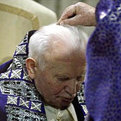
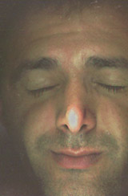

Quiero pasar esta Cuaresma con Teresita. Pienso entonces meter todos los días (en promedio) algo relacionado con ella. Puede ser datos biográficos, algún texto, alguna frase, algún comentario... Veremos.
Sta. Teresita:
1 >
Datos básicos
O simplemente Teresita o más simplemente
-en adelante- (cuando no haya confusión con Santa Teresa
de Jesús=Teresa de Avila): Teresa.
Vista de lejos, con trabajada objetividad y frialdad, diríamos:
{kind=link}
Se trata de una monja francesa, de fines de siglo XIX.
Nació en 1873.
Entró al convento carmelita de Lisieux (Normandía,
norte de Francia) a la
-insólitamente temprana- edad de 15 años.
Hizo la profesión a los 17 años y, monja de clausura, vivió allí hasta su muerte,
el año 1897; tenía entonces 24 años, cuando murió de
tuberculosis después de una agonía de varios meses.
No hizo nada notable.
No tuvo experiencias místicas extraordinarias,
ni milagros, ni nada espectacular.
Las "batallas" que relata son insignificantes:
soportar el ruido que hace otra monja
al rezar, sonreírle a otra que le es
antipática, etc.
Escribió poco (mayormente cartas, y algunas poesías y obras de teatro
para recreación conventual, sin pretensiones -ni logros-
artísticos).
No era buena escritora, y su cultura
(literaria y general) era mediocre; su ambiente
familiar es el de la típica burguesía
de clase media-alta católica conservadora de entonces;
sus cuatro hermanas mayores también fueron monjas.
En sus últimos años, le habían pedido que escribiera sus "recuerdos"; estos escritos, en parte autobiografía y en parte meditaciones espirituales, fueron recopilados y ublicados en 1898,con el título (típicamente soso) de "Historia de un alma". El librito tuvo éxito ... alentado quizás por las circunstancias "románticas" de su muerte (la monja jovencita que agoniza en su cama, deshojando rosas sobre el crucifijo y diciendo cosas edificantes ...) y hubo que reeditarlo al año... Era de sospechar, sin embargo, que se trataba de un efímero best-seller que no saldría del estrecho circuito de lectores de literatura devota... Después de todo, monjas que escriben (mal) y que son tenidas por "santas" (por sus compañeras)... siempre hubo a patadas.
Pero en 1906 -sólo nueve años después de su muerte-
se había traducido a más de cinco idiomas. Y
tipos pesados se interesan por el asunto: el obispo
local, Louis Veuillot...
En 1908
empiezan los milagros : curación de una niña ciega.
La fama de la "Historia de un alma" crece.
En 1914 el papa Pío X introduce la causa de beatificación:
desde entonces, todos los papas del siglo XX mostrarán
un insólito interés por Teresa -y recomendarán su "doctrina".
En el convento reciben toneladas de cartas (más de 500 por día; el ritmo
se mantendrá durante muchos años).
En 1923 es beatificada.
En 1925 es canonizada.
En 1927 es proclamada "patrona de los misioneros" (todo por Pío XI,
quien hizo de ella 'la estrella de su pontificado').
En 1944 Pío XII la proclama "segunda patrona de Francia" (junto con Juana de Arco).
En 1948 se comienzan a editar los originales de las cartas,
y después el resto de los escritos, cuidando la fidelidad
a los textos originales.
Aparecen montones de libros sobre Teresa, de biógrafos,
investigadores, teólogos de primer nivel
(el famoso Hans Urs von Balthasar entre ellos).
En 1997 -centenario de su muerte- Juan Pablo II la proclama
"doctora de la Iglesia".
Es entonces uno de los 33 doctores que -en sus veinte
siglos, poblados de santos, intelectuales y teólogos- tiene
la Iglesia; es el único "doctor" de los últimos dos siglos.
De los poquísimos escritores modernos citados
en el nuevo Catecismo, ella es la más citada.
Qué está pasando acá ?
-
El conflicto entre los sentidos y el espíritu
no tiene su fundamento en el pecado original,
(al menos no exclusivamente) sino más
bien en la constitución ontológica del hombre
[...]
La noción -analógica- de conflicto
se revela en toda la escala de la creación.
Aristóteles y Santo Tomás han visto más bien
las faz negativa de este problema,
subrayando la tendencia a la disociación
que es inherente a todo compuesto corruptible.
Pero no han observado suficientemente
ka función positiva y fecunda del conflicto.
Es uno de los méritos de Nietzsche haber,
en cierto modo, rehabilitado la guerra.
Por desgracia, la metafísica de "la voluntad de poder"
se detiene en el conflicto como realidad última,
y desemboca así en la divinización del caos.
Pero toda esta metafísica de la guerra debería
reconstruirse desde un punto de vista cristiano.
La guerra no es, como pensaron Heráclito y Nietzsche,
"la Madre de todo": es el Amor el que está en la raíz
del universo. Pero las armonías de acá abajo
se nutren de guerra latente y subyugada.
Toda paz terrestre conserva algo de paz armada.
Habría mucho que decir, en función de esta ley
general de la naturaleza corruptible, sobre ciertas
formas trágicamente irrealistas del pacifismo
moderno, sea en el orden político (culto borreguil
de la paz), sea en el orden espiritual (ilusión
de una paz y una armonía interior a conseguir
sin lucha, sin ascetismo).
Gustave Thibon
Memento homo, ... que estamos en Cuaresma.
... Asco de un lado (ver post anterior) y asco de otro.
Rod Dreher es uno que personifica todo lo que me asquea del catolicismo "conservador" de EEUU.
Acá se "indigna" (Por qué el Vaticano se preocupa tanto por el tema de la guerra, y no se puso a cortar cabezas episcopales por los escándalos sexuales ? ).
(Linkeado -in the right mood- por Gerard.)
Leo a estos rumiantes y me pregunto si algún terminaremos de vomitar toda esta bazofia. Si es que al menos empezamos a sentir la náusea previa al vómito, o si todavía seguimos rumiando.
A notar, por ejemplo, la carga afectiva del adjetivo "tradicional/tradicionalista" que se repite cinco veces en la nota; y la palabra familia; todo esto, de un objetivo -y típico- investigador humanista de la UBA y del Conicet... .
-
...Pero, por ser menos subrayado, conviene recordar que el freno no estaba sólo localizado en políticas estatales. Como Plotkin indica, junto con innovaciones que, en cierta medida, alcanzaron a modificar el rol de la familia y de la mujer, las mismas ocurrían "en una sociedad que seguía siendo conservadora en muchos aspectos". Y así como en otro ámbito una encuesta revelaba que el público del Instituto Di Tella era lector de diarios tradicionales, amante de la música clásica y nada adicto a la televisión, esta impronta puede reconocerse aun en el discurso mismo de los héroes modernizadores del campo psicoanalítico, para algunos de los cuales la realización de la sexualidad femenina seguía estando más cerca del reproductivismo que del placer, mientras para otros "la maternidad era todavía el eje de la femineidad" y la familia tradicional un elemento imprescindible del orden psíquico y social.
....
He aquí entonces cómo desde la historia narrada por Mariano Plotkin (de la cual he recortado tan sólo un momento) se verifican algunas tesis interpretativas del período y se abren nuevos interrogantes para complejizar y matizar la visión de un pasado reciente cuyo significado nos sigue interpelando.
Mah, morite.
El Festival de Tango de Buenos Aires tiene en su programación de hoy varios conciertos en bares. Entre ellos, está el Cardenal Domínguez a las 18:30 en el bar Miramar, calle Sarandí 1190. No sé si es gratis (supongo que sí, pagando alguna consumición); no sé si hay que retirar entradas antes (supongo que no).
Otro de los varios interesantes es el dúo Montes-Arias (bandoneón y guitarra) en el Richmond (Florida 468) a las 20:00.
Y también Lidia Borda, que se presenta (entre muchos otros) en el concierto en la Feria de Mataderos a la noche.

«Recuerda que eres polvo y al polvo volverás...»
El que impone las cenizas sobre la cabeza del Papa es el
cardenal Jozef Tomko, en la misa del miércoles.
(Gracias, Gerard)
Qué mejor imagen para esta cuaresma.
Karen de From the Anchor Hold, internada en el hospital, espera oraciones (May she be back soon writing her words of wisdom, balance, and radiance).
Amen.
Me pide un amigo si le puedo pasar algún instructivo para rezar el Rosario (no para él, que lo sabe, sino para un vecino).
Si bien ya hablamos bastante del Rosario hace unos meses, no recuerdo haber incluido un instructivo; y además, en aquel entonces no existía el cuarto grupo de misterios que agregó el Papa; y además estamos en la Cuaresma del año del Rosario (y se nos pide especialmente el rezo a todos los católicos, como pocas veces se ha pedido ...).
Todo esto amerita que conteste por acá, me parece.
Busco entonces en Internet ... Hay mucho material, pero creo que lo mejorcito que encontré son estos dos:
- El Santo Rosario en corazones.org ; bastante completo, con instructivo básico y listado de misterios actualizada.
- idem en E.W.T.N.: algo más breve, aunque más elegante en la estética; y con la misma información esencial.
Para los que estaban siguiendo el torneo de ajedrez en Linares, y se encontraron conque el sitio que trasmitía on line las partidas se cerró "por problemas financieros": acá hay otro.
El mensaje del Papa para esta cuaresma.
Y el texto de la audiencia de ayer, miércoles de ceniza.
Teresita estaba en las últimas, (murió de tuberculosis a los 24 años) y preguntaba a una monja [*] del convento sobre sus "progresos" espirituales. Ella, apurada, le contesta "Te prometo ser santa cuando tú te vayas al cielo; en ese momento pondré manos a la obra con toda el alma".
Teresita le contesta:
-
- No, no esperes hasta entonces. Comienza ahora mismo...
El mes anterior a mi entrada en el Carmelo [**] se me ha quedado
grabado como un recuerdo dulce. Al principio me decía a mí misma,
como tú ahora : «Seré santa cuando esté en el Carmelo; mientras tanto,
no pienso molestarme.» Pero Dios me hizo ver el valor del tiempo
e hice todo lo contrario; quise preparme para entrar, siendo muy fiel.
Y ese fue uno de los meses más hermosos de mi vida.
Créeme: nunca esperes a mañana para empezar a ser santa.
[*] sor María de la Eucaristía = María Guerin; su prima que entró poco
después que ella, y que también murió tuberculosa
[**] Teresita entró en el convento de Lisieux a los 15 años
Lo leí hoy en la "Postdata conclusiva..." de Kierkegaard
-
... a pesar de toda su cháchara sobre el devenir,
Hegel no entiende la historia mundial
como un hacerse sino que,
a través de la ilusión de un pasado , la entiende
en una conclusividad en la que todo "hacerse"
queda excluido.
Por lo tanto, un hegeliano nunca puede entenderse a sí mismo con la ayuda de su filosofía; sólo puede entender lo que es pasado, concluido; pero una persona que todavía vive no está "terminada".
Es de suponer que el filósofo se consuela a sí mismo con el pensamiento de que si uno puede entender China, Persia y 6000 años de historia mundial, no hay por qué preocuparse de que uno no entienda a un individuo... aún cuando ese individuo sea uno mismo.
Un lector se congratula por mi vuelta, me dice que «es como si me hubieras adelantado la Cuaresma».
Siendo la Cuaresma un tiempo de penitencia y mortificación, debería preguntarme cómo debo tomar eso... Pero en realidad, no tengo por qué preguntármelo: lo tomo bien. Yo también "espero" la Cuaresma; ésta, en particular.
Y espero que sea buena Cuaresma para mí y para todos.
Por mi parte, trataré de poner un poquito de orden en algunas de mis cosas,
para no malgastar tiempo; para empezar planeo abstenerme
de escribir acá los miércoles y viernes; y el resto de los días,
veré de ponerme unos horarios o reglas que me disciplinen
un poco.
Por cierto, para los que no lo saben: la Cuaresma de este
año (los cuarenta días antes de la Pascua) empiezan mañana,
Miércoles de Ceniza; en la misa, está el rito especial en el que el sacerdote
"impone la ceniza" sobre la frente de los fieles (antiguamente
decía «Recuerda que eres polvo y al polvo volverás»;
hoy se usa más «Conviértete y cree en el evangelio»).
Junto con el Viernes Santo, es día de ayuno y abstinencia.
Como es sabido, el Papa ha consagrado este ayuno y esta oración
del Miércoles de Ceniza a pedir por la paz, ante el peligro de guerra
EEUU-Irak.
Hay mucho material en Disputations de los últimos días para comentar y recomendar...
Ya me ocuparé de eso.
Por ahora, voy a una mención muy lateral: esta entrada
del 14 de febrero
recuerda
-entre el santoral del día que incluye a varios mártires-
el aniversario de la muerte de P. G. Wodehouse (Plum).
Como bien dice Tom, si el criterio tomista de la belleza
es : "bello es lo que visto, gusta", de la prosa
de PGW puede decirse que "al ser leída, gusta". Y :
-
«... en la vida de Wodehouse (m. 1975) no hay nada
que lo haga un candidato viable al martirologio -suelen aparecer
clérigos en sus historias, pero en esencia se trata de hombres
sin Dios, y él mismo no parece haber tenido mucho
interés en la cuestión religiosa- pero podemos esperar que
el esplendor del arte que mostró en su -ehmmm...- apostolado
de la risa, sea un signo de elección divina.»
Esto me sirve de pie para presentar, con mucho gusto,
un texto que escribió y me hizo llegar un amigo, Alejandro Murgia:
"
Apuntes para un estudio de la comicidad de P. G. Wodehouse
",
basado en uno de sus libros de cuentos ("Mr Mulliner tiene la palabra"). Se agradece.
Es linda introducción a Plum. Y a ver cuándo nos ponemos (yo o algún otro)
a armar una página (o sociedad !) dedicada al Master.
Y no me olvido que sigo debiendo un "review" de los libros editados por Anagrama.
- "Pocos sabían que Tolkien era un profesor protestante convertido al catolicismo...
En efecto, pocos lo sabían. Yo no lo sabía, los biógrafos de Tolkien tampoco; ni sus hijos, ni -sospecho- el mismísimo Tolkien lo sabía. El único que parece saberlo es el "corresponsal católico" de Clarín.
El resto del mundo creíamos (y entre nosotros, yo lo sigo creyendo, pobre de mí) que Tolkien fue siempre católico, que su madre se convirtió del anglicanismo cuando él era un niño [más].
- Para poder ser cristiano hay que salirse de la masa.
El mayor bien que se puede hacer a un hombre es hacerlo singular
Recién, volviendo del trabajo en el colectivo 86,
con un librito de K. en la mano, vi por la ventanilla
un afiche de propaganda: un señor mayor, de
traje impecable y la sonrisa entusiasta y vendedora del norte
(desde pastores hasta 'testigos' de Sprayette);
el slogan: «Ser uno más es ser uno menos».
Se trataba de un curso de marketing, o algo parecido.
El diablo es el mono de Dios, dicen; quedémonos pues con
la advertencia de los comerciales:
No acepte imitaciones.
Como para llenar un poco de espacio, (si no se me descajeta el template), vaya una carta de Teresita (Santa Teresa del Niño Jesús - o Teresa de Lisieux). Durante mis vacaciones anduve estudiándola, justo antes de salir conseguí sus obras completas, y ahora estoy en plena época teresiana. Ya comentaré más (sospecho que demasiado); esto sería una especie de trailer...
Esta carta, de julio de 1893, es para su hermana Celina, la única que permanecía "en el mundo" (no había podido entrar como monja como sus hermanas al tener que cuidar al padre, enfermo mental). Teresa entonces tenía 20 años y estaba en el noviciado del convento carmelita de Lisieux.
-
No me sorprende que no entiendas nada de lo que ocurre en tu alma. Un niño pequeño completamente solo en el mar, en una barca perdida en medio de las olas borrascosas ¿podrá saber si está cerca o lejos del puerto? Mientras sus ojos divisan todavía la orilla de donde zarpó, sabe cuánto camino lleva recorrido y, al ver alejarse la tierra, no puede contener su alegría infantil.
¡Pronto -se dice a sí mismo- llegaré al final del viaje! Pero cuanto más se aleja de la playa, más vasto parece también el océano. Entonces la CIENCIA del niñito se ve reducida a nada, y ya no sabe hacia dónde va su navecilla. Como no sabe manejar el timón, lo único que puede hacer es abandonarse, dejar flotar la vela a merced del viento...
Celina mía, la niñita de Jesús se encuentra completamente sola en una barquita, la tierra ha desaparecido a sus ojos y no sabe a dónde va, ni si avanza o retrocede...
Teresita sí lo sabe: está segura de que su Celina está en alta mar, de que la navecilla que la lleva boga a velas desplegadas hacia el puerto, de que el timón, que Celina ni siquiera puede ver, no está sin piloto. Jesús está allí, dormido, como antaño en la barca de los pescadores de Galilea. Él duerme... y Celina no lo ve porque la noche ha caído sobre la navecilla... Celina no oye la voz de Jesús. El viento sopla y ella lo oye soplar, ve las tinieblas... y Jesús sigue durmiendo. Sin embargo, si se despertara solamente un instante, sólo tendría que "ordenar al viento y al mar, y vendría una gran calma", y la noche sería más clara que el día. Celina vería la mirada divina de Jesús, y su alma quedaría consolada...
Pero entonces Jesús ya no dormiría, ¡y está tan cansado...! Sus pies divinos están cansados de buscar a los pecadores, y en la navecilla de Celina Jesús descansa tan a gusto...
Los Apóstoles le habían dado una almohada, el Evangelio nos cuenta este detalle. Pero en la barquilla de su esposa querida Nuestro Señor encuentra otra almohada mucho más suave: el corazón de Celina.
Allí lo olvida todo, allí está como en su casa... No es una piedra lo que sostiene su cabeza divina (aquella piedra por la que suspiraba durante su vida mortal): es un corazón de hija, un corazón de esposa. ¡Y qué contento está Jesús! ¿Pero cómo puede estar contento cuando su esposa sufre, cuando vela mientras él duerme dulcemente? ¿No se da cuenta de que Celina no ve más que la noche, de que su rostro divino está escondido para ella, y de que a veces hasta la carga que siente sobre su corazón le parece pesada...?
¡Qué gran misterio! Jesús, el niñito de Belén, a quien María llevaba como una "carga ligera", se vuelve pesado, tan pesado que san Cristóbal se queda sorprendido... También la esposa de los Cantares dice que su "Amado es un ramillete de mirra que descansa sobre sus senos". La mirra es el sufrimiento, y así es como Jesús reposa sobre el corazón de Celina... Y sin embargo, Jesús está contento de verla entre sufrimientos, se siente feliz de recibirlo todo de ella durante la noche... Espera la aurora, y entonces... sí, entonces ¡qué despertar el de Jesús...!
Celina querida, ten la seguridad de que tu barca está en alta mar, tal vez muy cerca ya del puerto. El viento del dolor que la empuja es un viento de amor, y ese viento es más rápido que el relámpago...
¡Cómo me emocionó saber que Jesús te había inspirado la idea de los pequeños sacrificios! Yo se lo había pedido, no contando con escribirte tan pronto. Hasta ahora, nunca Nuestro Señor se me ha negado a inspirarte lo que le he pedido que te diga. Siempre nos concede las mismas gracias a las dos. Hasta me veo obligada a llevar un rosario de prácticas. Lo hago por caridad hacia una de mis compañeras. Ya te lo contaré detalladamente, es muy divertido... Estoy presa entre unos hilos que no me gustan, pero que me son muy útiles en la situación en que se encuentra mi alma.
 Considerando que estuve un mes sin dar señales de vida, alguno al toparse con esta foto mía podría llegar a pensar que soy finado.
No es del todo así.
Se trata de que, motivado por esto, se me ocurrió probar eso de sacarme una foto usando el scanner... (si mi hermana lee esto: sí, sí, ya te lo voy a devolver). No fue tan difícil. Hay que cerrar los ojos, eso sí, porque la luz del scanner es muy fuerte.
Esto podría ir dedicado al mejicano que cayó buscando
"fotos del apocalipsis" y me dejó este valioso comentario:
QUE CLASE DE BROMA ES ESTA ? ESPERO REALIZES COSAS MEJORES EN EL FUTURO O CUANDO MENOS LE POGAS FOTOS YA QUE FUE LO QUE ME INTERESO. BYE
Bye, manito.